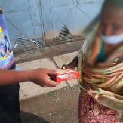
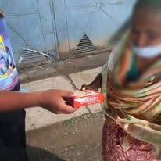

Welcome to Our Foundation
We are a group of friends working together to help poor and underprivileged people. Through collected donations, we provide essential items like food, clothes, and other basic needs directly to those who need them most.
Our Mission
Our mission is simple: to help the poor through kindness, teamwork, and community support.
How We Work
We raise funds by collecting donations from individuals and well-wishers. With these resources, we purchase essential supplies and distribute them to the people who need them most — with care, love, and dignity.
Our First Step – September 3, 2022
On September 3, 2022, we proudly organized the first program of HSH Friends Foundation. This event was powered entirely by the contributions of our own team members. We provided food and essential items to people in need, proving that real change begins with unity, compassion, and small, selfless steps.
 

Contact & Donate
If you'd like to support our work, you can contact us or donate directly:
- Sakib Ul Hasan: 01601426369 (Bkash)
- Md Rashed Khan: 01943005001 (Nagad)